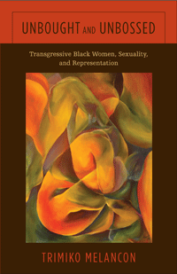

<body bgcolor="#FFFFFF" text="#000000" link="#0000FF" vlink="#CC0000" alink="#CC0000"><center><hr width="350" size="1" align="center" noshade>How do fictional representations of transgressive black women in the post-civil rights era expand our understanding of race and black womanhood?<hr width="350" size="1" align="center" noshade><p><a href="https://cdcshoppingcart.uchicago.edu/Cart/ChicagoBook.aspx?ISBN=9781439911457&&PRESS=temple" target="_top">Buy this book!</a> | <a href="https://cdcshoppingcart.uchicago.edu/Cart/Cart.aspx?PRESS=temple" target="_top">View Cart</a> | <a href="https://cdcshoppingcart.uchicago.edu/Cart/Cart.aspx?PRESS=temple" target="_top">Check Out</a></p><p></p></center><!--none//--><h1>Unbought and Unbossed</h1>
<H2>Transgressive Black Women, Sexuality, and Representation</H2>
<h3>Trimiko Melancon</h3>
<P>cloth 1-4399-1145-2 $74.50, Sep 14, <FONT COLOR=#990033>Available</FONT>
<br>paper 1-4399-1146-0 $26.95, Sep 14, <FONT COLOR=#990033>Available</FONT>
<br>Electronic Book 1-4399-1147-9 $26.95 <FONT COLOR=#990033>Available</FONT>
<BR> 256 pp
5.5x8.5
5&nbsp;halftones
</P><h3 align="center"><P><font color="#996633">College Language Association Creative Scholarship Book Award,
2016</font></P>
</H3>
<BLOCKQUOTE><I>"</I>Unbought and Unbossed<I> is an eloquently written and well-organized book about an important era in black women's literary tradition."</i><br>&#151<b>LaMonda Horton Stallings</b>, Associate Professor of Gender Studies at Indiana University Bloomington and author of <i>Mutha� Is Half a Word: Intersections of Folklore, Vernacular, Myth, and Queerness in Black Female Culture</i></I></BLOCKQUOTE>
<P><I>Unbought and Unbossed</I> examines black women�s literary and cultural production of the 1970s and early 1980s. Considering texts in the socio-cultural and historical moments of their production, Trimiko Melancon analyzes representations of black women that not only transgress racial, gender, and sexual boundaries, but also diverge from both discourses of �whiteness� and constructions of female identity imposed by black nationalism.
<P>Drawing from black feminist and critical race theories, discourses on gender and sexuality, and literary criticism, Melancon illuminates the complexity of black female identity, desire, and intimacy. She sheds light on a more complex black identity, one ungoverned by rigid politics over-determined by race, gender and sexuality, while also enabling us to better understand the black sexual revolution, contemporary cultural moments, and representations in the age of Michelle Obama.
<BR>&nbsp;<h2>Excerpt</h2><P>Excerpt available at <a href="http://www.temple.edu/tempress">www.temple.edu/tempress</a></p>
<BR>&nbsp;<h2>Reviews</h2>
<p><i>"Trimiko Melancon offers beautiful and complex readings of novels by Toni Morrison, Ann Allen Shockley, Alice Walker, Gayl Jones, and Gloria Naylor while effortlessly synthesizing a generation of scholarship on black sexuality. </i>Unbought and Unbossed<i> is a refreshingly innovative new work destined to become a classic."</i> <br>&#151<b>Robert F. Reid-Pharr</b>, author of <i>Once You Go Black: Choice, Desire, and the Black American Intellectual</i>
<p><i>"</i>Unbought and Unbossed<i> is an interesting exploration of black female sexual politics and literary representations of black womanhood at the intersection of three political and aesthetic movements: black nationalism, (black) feminism, and postmodernism. I was especially impressed with Melancon�s close readings of the primary texts and her analysis of the symbolic sexual play and coming of age of the characters. This book is a welcome addition to the very few literary studies that deal explicitly with black womanhood and transgressive sexuality."</i> <br>&#151<b>Eve Dunbar</b>, Associate Professor of English at Vassar College and author of <i>Black Regions of the Imagination: African American Writers between the Nation and the World</i> (Temple)
<p><i>"[A] critical analysis of five 'post-1960s black women�s texts.' ... Perhaps most provocatively, Melancon concentrates on the transgressive sexuality present in all of these books... and asserts its importance to the authors� larger project.... [S]erious readers of African-American literature will value the innovative observations offered on the intersection of 'race, gender, and sexuality' in American life and letters."</i>
<br>&#151<i><b>Publishers Weekly</i></b>
<p><i>�In </i>Unbought and Unbossed<i>, Trimiko Melancon weaves an insightful, critical analysis of discourses and literary representations of black women in novels by Gayl Jones, Gloria Naylor, Toni Morrison, Ann Allen Shockley, and Alice Walker. Melancon�s central argument is that through depictions of transgressive sexuality, the novels defy traditional race, gender, and sexual representations of black women present in American literature. She smartly interprets expressions of black women�s agency and resistance to white mainstream and Black Nationalist expectations�. </i>Unbought and Unbossed<i> is an important text for people interested in race, gender, sexuality, and intersectionality. The book opens up new ways to consider the transgressive sexuality of black women within works of literature.�</i><br>&#151<i><b>Gender and Society</i></b>
<p><i>"Her engagement with the most difficult scenes in each text is one of the work's strengths.... Melancon's work contributes to an important conversation about black female sexuality as liberatory. </i>Unbought and Unbossed<i> will lead both old and new scholars of black women's writing back to the novels she investigates to understand the characters' deliberate acts of transgression within the context of a social movement that encompasses both the sexual revolution and the Black Power Movement. Teachers of black women's literatures and sexualities, in particular, will find it a valuable place to begin shifting the script."</i><br>&#151<i><b>Women's Review of Books</i></b>
<p><i>"As she crafts fresh close readings, Melancon deftly blends in various historical contexts and diverse theoretical references.... </i>Unbought and Unbossed<i> makes a generous contribution to literary history and cultural criticism, prodding the reader toward new, challenging discussions about black women�s sexuality....Summing Up: Highly Recommended."</i><br>&#151<i><b>CHOICE</i></b>
<p><i>"Melancon is invested in having readers understand the historical and cultural context...within and outside the Black community, and its relation to the novels and to the present.... She makes it clear why the issues she's addressing matter, and why Black women's lives and sexual liberation matter. She combines her close readings with an integral historical analysis and framework to construct a postmodern Black female identity free what she refers to as the 'classical black female script'.... [H]er trope of transgression is well suited to understanding past and present notions of race, gender, and sex and in constituting a new era of feminist thought concerning Black female sexuality and subjectivities."</i><br>&#151<i><b>Feminist Collections</i></b>
<p><i>"In a complex and masterful reading of works by Toni Morrison, Ann Allen Shockley, Alice Walker, and Gayle Jones, Trimiko Melancon uses and engages historical, sociological, and literary tools to reframe black women�s fight for freedom from sexual, social, representational, economic, and patriarchal oppression in the post-Civil Rights era. Her arguments are intricately woven through historical contexts that are inclusive of back women�s positions within not only American society but also the black community, as found in the larger discourses of sex, ideology, nationalism, and liberation. Her analysis powerfully demonstrates that these writers have created transgressive women characters who defy subjugation 'by any means necessary.'"</i> <br>&#151<i><b>Contemporary Women's Writing</i></b>
<BR>&nbsp;<h2>Contents</h2><P>
<p>Contents
<br>Acknowledgments
<br>Introduction: Disrupting Dissemblance
<br>
<br>1. �New World Black and New World Woman�: Or, Beyond the Classical Black Female Script
<br>2. Toward an Aesthetic of Transgression: Ann Allen Shockley�s <I>Loving Her</I> and the Politics of Same-Gender Loving
<br>3. Negotiating Cultural Politics
<br>4. �That Way Lies Madness�: Sexuality, Violent Excess, and Perverse Desire
<br>5. �Between a Rock and a Hard Place�: Gloria Naylor�s <I>The Women of Brewster Place</I>
<br>
<br>Conclusion: �Without Fear of Reprisals�: Representation in the Age of Michelle Obama
<br>Notes
<br>Bibliography
<br>Index
</P><BR>&nbsp;<H2>About the Author(s)</H2>
<P><b>Trimiko Melancon</b> is an Assistant Professor of English, African American Studies, and Women's Studies at Loyola University New Orleans. Visit her online at <a href="http://www.trimikomelancon.com/" target="new">www.trimikomelancon.com</a></P>
<BR><H2>Subject Categories</H2>
<p><A HREF="/tempress/literature.html" TARGET="_top">Literature and Drama</a>
<BR><A HREF="/tempress/african.html" TARGET="_top">African American Studies</a>
<BR><A HREF="/tempress/gender.html" TARGET="_top">Gender Studies</a>
</p>
<p align="center"><a href="https://cdcshoppingcart.uchicago.edu/Cart/ChicagoBook.aspx?ISBN=9781439911457&&PRESS=temple" target="_top">Buy this book!</a> | <a href="https://cdcshoppingcart.uchicago.edu/Cart/Cart.aspx?PRESS=temple" target="_top">View Cart</a> | <a href="https://cdcshoppingcart.uchicago.edu/Cart/Cart.aspx?PRESS=temple" target="_top">Check Out</a></p><p><font face="Arial" size="1"><a href="copyright.html" onMouseOver="window.status='Web Copyright Policy';return true;" onMouseOut="window.status=''" title="Web Copyright Policy">&copy;</a> 2016 <a href="http://www.temple.edu" target="new" onMouseOver="window.status='Link to Temple University home page';return true;" onMouseOut="window.status=''" title="Link to Temple University home page">Temple University</a>. All Rights Reserved. http://www.temple.edu/tempress/titles/2325_reg.html</font></p>